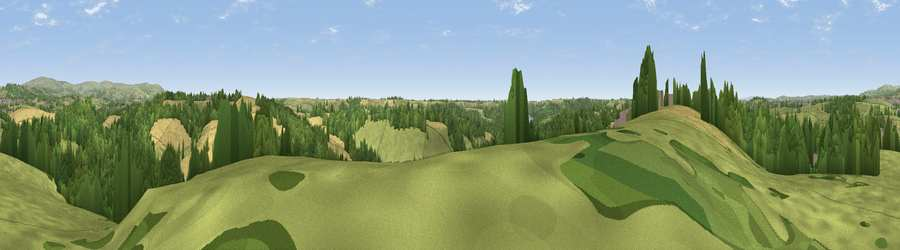

Hareston Hill
#20447 in England · top 43% of its area beats it · near YealmptonWhere it is
The exact computed spot (SX 56725 53225). Click the marker for map links.
The view, rendered

A 360° render of this exact spot computed from the terrain model, tree cover and land cover — summer colours, afternoon light, calibrated against photographs of famous viewpoints. Real trees, hedges and buildings will differ in detail.
The panorama
Grey silhouette: terrain skyline in each direction (720 bearings, Earth curvature and refraction included). Dashed green: skyline with trees (+15 m) and buildings (+8 m) as obstacles. Blue strip: how far the ground is visible on each bearing.
Where the view opens
Wedge length = distance to the farthest visible ground on that bearing (vegetation-aware). Rings at 10, 25 and 50 km.
What fills the view
44% grassland · 30% woodland · 24% cropland · 1% built-up
Angular shares of the visible panorama (visual magnitude), not map area. Landscape diversity 0.50 (0–1 Shannon).
Key numbers
More beautiful places nearby
The staircase of upgrades: each row has a higher view potential than everything closer. Driving times are estimates from straight-line distance, calibrated against real road routing — check an actual route before setting out.
| Place | Direction | Drive | Score |
|---|---|---|---|
| Viewpoint near Yealmpton | E · 1 km | ~4 min | 54.4 |
| Viewpoint near Elburton Village | WSW · 4 km | ~9 min | 54.5 |
| Viewpoint near Ermington | E · 5 km | ~11 min | 66.4 |
| Viewpoint near Sparkwell | N · 5 km | ~11 min | 77.6 |
| Viewpoint near Newton Ferrers | S · 6 km | ~13 min | 79.5 |
| Viewpoint near Lee Moor | N · 9 km | ~18 min | 81.0 |
| Viewpoint near Lee Moor | N · 9 km | ~18 min | 82.7 |
| Viewpoint near Hope | SE · 18 km | ~32 min | 84.4 |
50.36145, -4.01569 · source: dobih hill · position refined by local search. Computed location — check access rights before visiting.